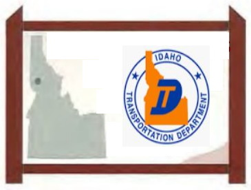

The Idaho Transportation Department
and the Idaho Historical Society, led by Merle Wells, began
promoting the historical heritage of Idaho
through the use of highway markers in
1956.
Before the organization of this
program, historical markers of various
shapes and sizes were installed through
the efforts of private organizations or by
relatives of the pioneers. In most cases,
these markers were installed, properly
dedicated and then left to the elements
and vandals.
The new program organized,
standardized and maintained the state's
historical markers.
The Idaho
Historical Society
proposes sites
and prepares
information for
the signs. The
Idaho Transportation Department
directs the
preparation, location, installation and
maintenance of the four-foot by eight-foot
wooden signs.
The signs are located at roadside turnouts
or near other available parking so that
you will not have to park on the shoulder
of the highway to read them. Road signs
announcing the historical markers are
typically posted about 1,000 feet in
advance of the site to provide an opportunity to slow down and turn out safely.
The program was revitalized in 1986 with
the installation of over 100 new signs in
preparation for Idaho's centennial celebration of statehood in 1990. There are now
244 historical markers along the gem
state's highways.
This app contains 273 markers that were sourced from the following
documents and websites.